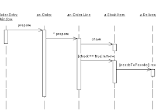

Final Code Walks

All code walks will take place in WVH 164166.
Monday, 25 April 2016
Time |
| Partner 1 |
| Partner 2 |
1pm |
| Allison Alder |
| Maha Alkhairy |
2pm |
| Austin Colcord |
| Max Batty |
3:15pm |
| Marco Crippa |
| Lukas Berger |
4:15pm |
| Vignesh Mohankumar |
| Eric Yu |
Tuesday, 26 April 2016
Time |
| Partner 1 |
| Partner 2 |
10am |
| Maxwell Donkoh |
| — |
11am |
| Lydia Auch |
| Alex Jo |
1pm |
| Kevin McDonough |
| Zena Migeed |
2pm |
| Arjun Balaji |
| Luke Van Seters |
3:15pm |
| Alp Eki |
| Chris D. |
4:15pm |
| Nathan Lilienthanl |
| Stevie Troetti |
5:15pm |
| Chris Beiser |
| Stu Ramgolan |
Wednesday, 27 April 2016
Time |
| Partner 1 |
| Partner 2 |
10am |
| Beatrice Huang |
| Edwin Cowart |
11am |
| Sinan Pehlivanoglu |
| Alex Jolly |
1pm |
| Jack Friedson |
| Chris Luk |
2pm |
| Klayton Bailey |
| Sean Johnson |
3:15pm |
| Phaelyn Kotuby |
| Kaylie DeHart |
4:15pm |
| Joe Ruane |
| Deric Huang |
5:15pm |
| Rachel Jones |
| Tabitha Kadima |